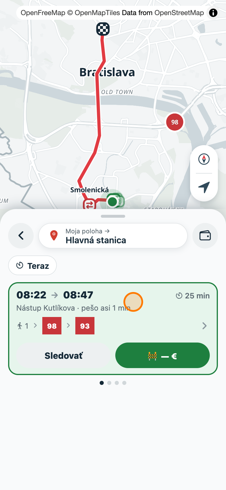
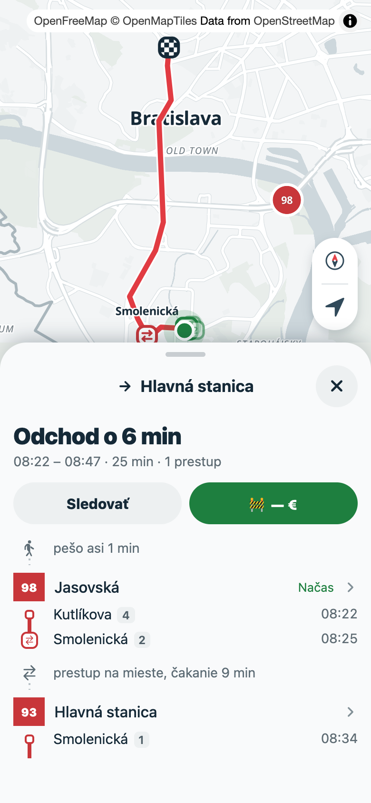
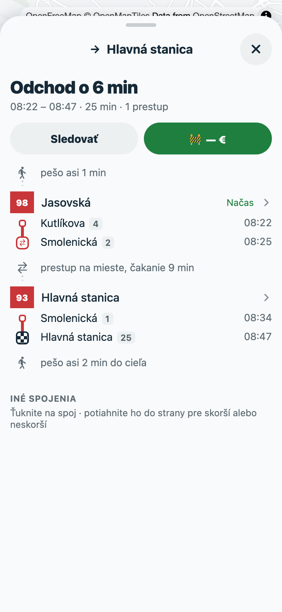
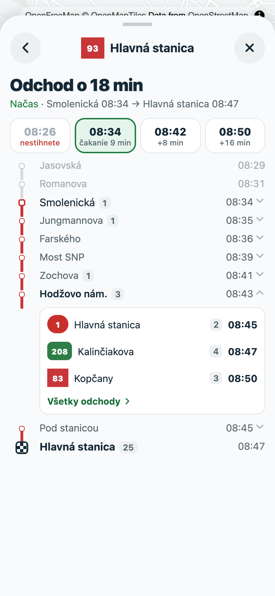
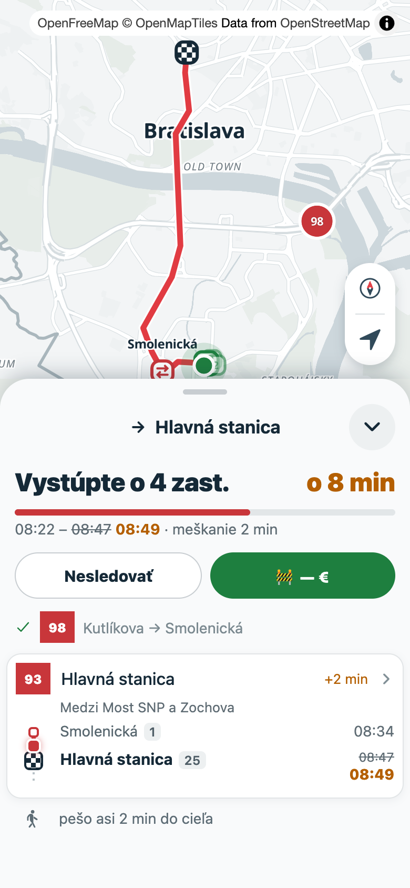
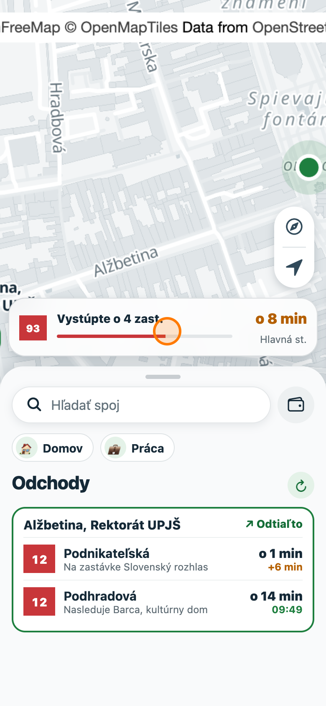
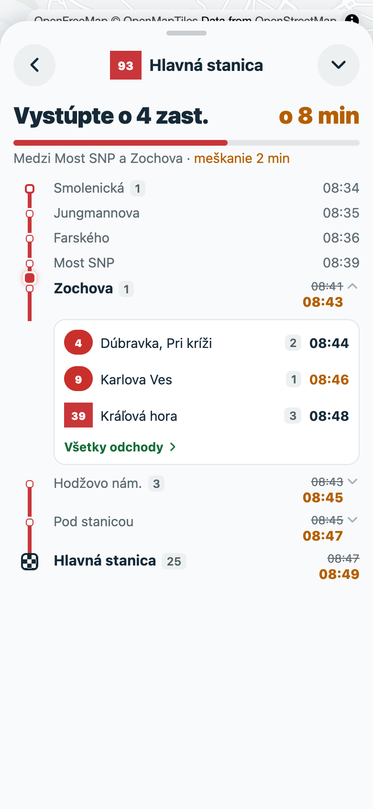
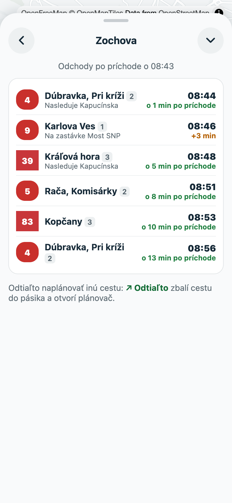

The journey drawer: planner and Jazda as one
Spoj · proposal with mockups · 2026-10-28
One journey surface. A journey opened from the planner, from departures or from the map opens in its own journey drawer, stacked over the main drawer. It looks the same whether you track it or not; tracking only adds live state (headline, progress bar, vehicle on the rail).
The pill is that drawer, tucked. Minimise a tracked journey and the drawer shrinks into the pill above the main drawer. Tap the pill and it grows back into the same drawer you planned with.
Two tiers inside it. Tier 1 is the journey (steps). Tier 2 is one leg (every stop, earlier and later trips, departures after you arrive at a stop). Tier 3, optional, is one stop's full departures. Back pops these, then closes the drawer.
Same CTAs everywhere: Sledovať / Nesledovať plus the ticket button. Jazda's separate stop button goes away.
Flow
Main drawer (today's drawer, minus details)
Stays mounted underneath at its own stage. While the journey drawer is open it is hidden; when that drawer closes or tucks, it comes back as you left it, with the same card still selected.
Journey drawer (new, its own stages: peek · medium · full)
A single-trip connection (a departure row, a vehicle tapped on the map) opens straight at tier 2 as its root, since it has no steps to list.
Mockups
Built from the app's own tokens and Ionicons, over real map captures. Data: walk → 98 Kutlíkova–Smolenická → 93 Smolenická–Hlavná stanica.








What changes in code
| Area | Change |
|---|---|
| State | Screen loses mode: 'details', detailsBackMode and selectedConnection. A new JourneyView holds { journey, pages: ('leg' | 'stop')[], tucked }. The tracked ride still names its journey by uid, so the pill is simply a tucked JourneyView whose journey is tracked. |
| Drawers | A second sheet, JourneyDrawer, with its own sheetHeight, stages and swipe-back, reusing useSheetResponder and useSwipeBack. Its expanded stage is the full height. The main drawer's rideMorph fade-out goes away. |
| Tier 1 | JourneyOverview merges JourneyDetails with the top of RideStops (ridden legs, current leg). JourneySteps stays and loses in-place unfolding: a tap opens tier 2. Swiping a leg for another trip stays. |
| Tier 2 | LegView merges ConnectionDetails and Jazda's timeline: TripTimeline plus ArrivalDepartures plus alternative chips from useLegAlternatives. A single-trip connection uses it as its root. |
| Tier 3 | StopView reuses StopCard and DepartureRow with useArrivalDepartures. OpenStopDepartures pushes this page instead of jumping drawers. |
| Headline | A single journeyHeadline(journey, ride, vehicles) returns { title, countdown, progress | null }: departureHeadline when not tracked, rideInstruction, rideCountdown and rideProgress when tracked. The pill and the drawer header both read it, which is what lets one morph into the other. |
| CTAs | JourneyActions is the only place for Sledovať/Nesledovať and the ticket. Jazda's stop SheetButton is deleted. |
| Pill | LiveRide shrinks to the strip, plus a morph into the JourneyDrawer header (badge, title, countdown, bar), using the same interpolations as today. |
| Back | drawerBackSteps gains 'journey' and one step per page. Android's hardware back and the Android browser's history (useBackHandler) pop them. At the root, back tucks a tracked journey and closes an untracked one. The iOS edge swipe pops pages inside the journey drawer only. |
| Map | bottomInset, routes and boarding stop come from the journey drawer while it is open. Tier 2 frames its leg. A tucked journey, or one at peek, keeps the map following its vehicle as today. |
| Desktop | The journey drawer takes over the sidebar, with back in its header. There is still no tracking, so no pill. |
| Deleted | ConnectionDetails, RideStops, rideOpen/stageBeforeRide, the stripShown special case, toggleLeg/selectLeg unfolding, and the details branch of previousScreen. |
Suggested PRs: (1) the journey drawer and navigation, keeping today's content; (2) the unified headline, CTAs and the pill morph; (3) tier 2 and tier 3 pages. Each PR stays shippable.
Open questions
- Tuck untracked journeys too? Proposed: no. ✕ dismisses them, and only a tracked journey earns the pill. The alternative is a pill for "the journey I was just looking at", which competes with the tracked one.
- Where should the pill reopen? Proposed: tier 1 at medium, since time has passed and the overview is what you want. The alternative is the page you left (Apple Maps style).
- Alternatives in tier 2: chips, as mocked, as well as the existing sideways swipe on tier 1 rows? Or chips only?
- The main drawer under an open journey: hidden, as proposed, or visible as a strip at peek so you can jump back to search?